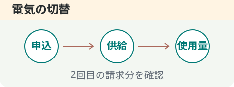
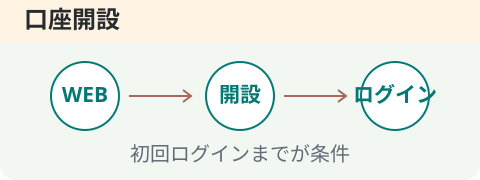
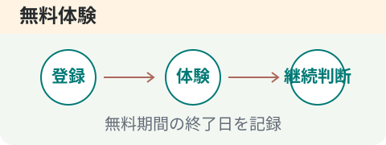
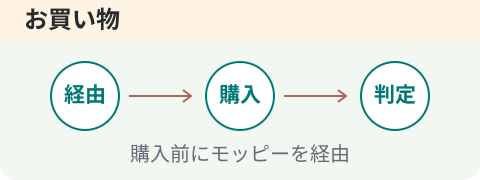
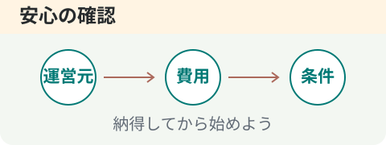
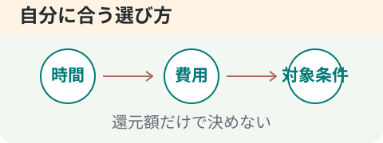

公式総合 1位
公式総合 1位クレジットカード
三菱UFJカード
15,000P初回のWEB申し込み後、45日以内にカードを受け取る
年会費無料。利用代金などは別途必要
15,000円相当 · 1P＝1円相当
こんな人に
必要なクレジットカードを検討している人
- 難易度
- 未評価
- 所要目安
- 実測なし
確認：2026-09-05 ／ 達成期限は上の条件を確認
やり方・注意点を見る →ちょっといい毎日、
ポイントから。
たった5つの質問で、
あなたにぴったりの始め方を見つけます。
登録不要・無料で診断できます
モッピーを無料で始める →INVITATION
モッピーへの新規登録はこちらから。
紹介特典は、登録先に表示される適用条件をご確認ください。
当サイトの紹介リンク経由の登録・利用により、運営者が紹介報酬を受け取る場合があります。
HOW IT WORKS
広告費の支払い →
一部を還元 →
広告を開くだけでは条件達成になりません。広告ごとの条件が優先されます。
仕組みと費用を詳しく知る →CHOOSE YOUR WAY
MOPPY RANKING
2026年9月5日確認の、公式総合トップ3。
気になる案件は、やり方までチェック。
確認日：2026年9月5日（日本時間）・自動更新ではありません
公式総合 1位クレジットカード
初回のWEB申し込み後、45日以内にカードを受け取る
年会費無料。利用代金などは別途必要
15,000円相当 · 1P＝1円相当
必要なクレジットカードを検討している人
確認：2026-09-05 ／ 達成期限は上の条件を確認
やり方・注意点を見る →
公式総合 2位電気の切替
WEB申込後70日以内に供給開始し、2回目の請求分で200kWh以上使用
電気料金が発生。現在の契約と総額で比較
20,000円相当 · 1P＝1円相当
電気契約を見直す予定があり、使用量条件に合う世帯
確認：2026-09-05 ／ 達成期限は上の条件を確認
やり方・注意点を見る →
公式総合 3位口座開設
新規口座開設後、申込から90日以内に初回ログイン
口座開設無料。利用サービスの手数料は別途確認
12,000円相当 · 1P＝1円相当
初めて楽天銀行の個人口座を必要としている人
確認：2026-09-05 ／ 達成期限は上の条件を確認
やり方・注意点を見る →モッピー公式ページ内「ジャンル別ランキング・総合」の確認時点の上位3件を、表示順のまま掲載しています。POI DAYS独自の人気順位や還元額順ではありません。公式側の集計期間・算出方法は確認できていません。
ポイント数は詳細ページの条件も確認しています。楽天銀行は一覧の通常ポイントと詳細のチャレンジボーナスを分けて表示。異なるサービスや条件の金額を単純に比較しないでください。
出典：モッピー公式ページ内の総合ランキング
使い方ガイド無料体験
U-NEXTが初めての人の無料トライアル登録完了
無料期間終了後は有料継続。有料作品は別料金
2,300円相当 · 1P＝1円相当
未利用で、見たい作品があり契約期限を管理できる人
確認：2026-09-05 ／ 達成期限は上の条件を確認
やり方・注意点を見る →
使い方ガイドショッピング
モッピー経由から24時間以内にカゴへ追加し、89日以内に決済
商品購入代金・送料など
購入金額に応じた還元 · 1P＝1円相当
もともと楽天市場で買い物をする予定がある人
確認：2026-09-05 ／ 達成期限は上の条件を確認
やり方・注意点を見る →こちらの2件は総合トップ3とは別の編集部選定です。掲載順は順位ではありません。掲載金額には招待による入会特典を含めていません。
ABOUT MOPPY
だから、はじめてのポイ活にも。
累計会員数
たくさんの人が利用
2005年スタート
積み重ねてきた運営実績
わかりやすく
貯めやすい
現金・ギフト券・マイル
選べる交換先
出典：モッピー公式ご利用ガイド・セレス発表（2026年9月5日確認）
FIND YOUR ROUTE
やりたくないことは、選ばなくて大丈夫。
5つの質問から、おすすめの始め方をご案内します。
YOUR RESULT
あなたにおすすめの始め方は…
回答に基づくカテゴリ案内です。獲得額や達成期間を保証するものではありません。
モッピーで無料登録する 条件付きの案件一覧を見る →気になる案件のポイントを試算する →MY POINT PLAN
気になる案件を3つまで。
公式で確認したポイント数を入れて、目標までの道のりを見てみよう。
START GUIDE
予定反映は獲得確定ではありません。案件ごとの条件を優先してください。
終わったものにチェックして、次の一歩を確認。
0 / 7 完了
チェックはこのページを開いている間だけ保持します。実際の登録・承認状態とは連携していません。
A LITTLE REWARD
現金、電子マネー、ギフト券、マイルなど。
自分にうれしい交換先を選べます。
交換条件・手数料・反映日数は交換先によって異なります。
公式ガイドで交換方法を確認 →HONESTLY
モッピーは、こんな希望には合わないことも。
無理な買い物を増やさずに。
あなたのペースで、ちょっとおトクを。
同じサービスでも、ポイント数や対象条件が異なることがあります。還元額だけでなく、端末・初回利用の条件・期限・費用をそろえて比較しましょう。案件ガイドに確認日付きの条件を掲載しています。申込直前には公式情報を確認してください。
BEFORE YOU START

01モッピーの運営会社と、当サイトは別です。

02無料登録＝すべての案件が無料、ではありません。
03確認日の記録と、申込時の最新条件を区別。
手順と招待コードをまとめて確認できます。
QUESTIONS & ANSWERS
会員登録は無料です。掲載案件には購入や有料サービスの契約が必要なものもあります。利用する前に、それぞれの費用と条件を確認しましょう。
はい。ショッピング、ゲーム、アンケートなどの使い方があります。診断で「作りたくない」を選ぶと、カード発行を候補から外してご案内します。
この診断は、ご希望に合う案件カテゴリをご案内するものです。実際に獲得できるポイントは、利用する案件や達成条件によって異なります。
このサイトの招待コードは Jh7He170 です。招待欄でコピーできます。登録画面で入力を求められた場合に使用してください。
まず案件の反映時期とポイント通帳を確認してください。確認期間を過ぎても反映されない場合は、必要な情報をそろえてモッピー公式のサポートへお問い合わせください。
公式ご利用ガイドへREAD & TRY
ゲーム・無料体験・高還元・高額案件。
費用と条件から選びましょう。
クレジットカード獲得条件・やり方・失敗しやすいポイント →
電気の切替獲得条件・やり方・失敗しやすいポイント →
口座開設獲得条件・やり方・失敗しやすいポイント →
無料体験獲得条件・やり方・失敗しやすいポイント →
ショッピング獲得条件・やり方・失敗しやすいポイント →
UPDATES
5件の案件手順と、登録・安全性・カテゴリ別ガイドを追加しました。案件の金額・順位は9月5日の確認記録です。